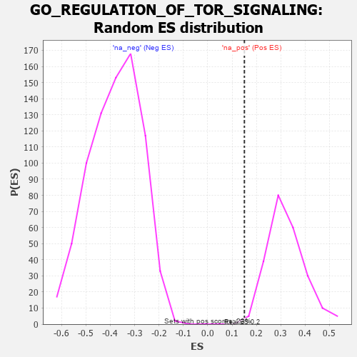

| | | Dataset | 7d |
| Phenotype | NoPhenotypeAvailable |
| Upregulated in class | na_pos |
| GeneSet | GO_REGULATION_OF_TOR_SIGNALING |
| Enrichment Score (ES) | 0.15062466 |
| Normalized Enrichment Score (NES) | 0.4672512 |
| Nominal p-value | 1.0 |
| FDR q-value | 0.9973004 |
| FWER p-Value | 1.0 |
Table: GSEA Results Summary
 Fig 1: Enrichment plot: GO_REGULATION_OF_TOR_SIGNALING
Fig 1: Enrichment plot: GO_REGULATION_OF_TOR_SIGNALING
Profile of the Running ES Score & Positions of GeneSet Members on the Rank Ordered List
| PROBE | GENE SYMBOL | GENE_TITLE | RANK IN GENE LIST | RANK METRIC SCORE | RUNNING ES | CORE ENRICHMENT | | 1 | GSK3A | | | 351 | 0.745 | 0.0410 | Yes |
| 2 | TTI1 | | | 919 | 0.503 | 0.0272 | Yes |
| 3 | TELO2 | | | 1006 | 0.482 | 0.0716 | Yes |
| 4 | UBR2 | | | 1334 | 0.423 | 0.0788 | Yes |
| 5 | KPTN | | | 1341 | 0.422 | 0.1263 | Yes |
| 6 | NPRL3 | | | 1592 | 0.375 | 0.1378 | Yes |
| 7 | FNIP1 | | | 1798 | 0.338 | 0.1506 | Yes |
| 8 | NPRL2 | | | 2184 | 0.278 | 0.1340 | No |
| 9 | SEC13 | | | 2330 | 0.256 | 0.1450 | No |
| 10 | MTM1 | | | 2893 | 0.168 | 0.0935 | No |
| 11 | HDAC3 | | | 3528 | 0.072 | 0.0219 | No |
| 12 | WDR59 | | | 3692 | 0.045 | 0.0065 | No |
| 13 | DGKQ | | | 3856 | 0.020 | -0.0117 | No |
| 14 | GPAT3 | | | 4170 | -0.037 | -0.0468 | No |
| 15 | RRAGD | | | 4183 | -0.039 | -0.0439 | No |
| 16 | SESN1 | | | 4192 | -0.041 | -0.0402 | No |
| 17 | RRAGA | | | 4223 | -0.046 | -0.0388 | No |
| 18 | RPTOR | | | 4252 | -0.050 | -0.0366 | No |
| 19 | ITFG2 | | | 4796 | -0.156 | -0.0870 | No |
| 20 | TBCK | | | 4937 | -0.186 | -0.0834 | No |
| 21 | FLCN | | | 5140 | -0.235 | -0.0819 | No |
| 22 | ATM | | | 5210 | -0.249 | -0.0621 | No |
| 23 | WDR24 | | | 5568 | -0.338 | -0.0683 | No |
| 24 | SZT2 | | | 5882 | -0.429 | -0.0586 | No |
| 25 | STK11 | | | 5922 | -0.443 | -0.0129 | No |
| 26 | RFFL | | | 6674 | -0.749 | -0.0217 | No |
| 27 | PDCD6 | | | 7630 | -1.615 | 0.0429 | No |
Table: GSEA details [plain text format]

Fig 2: GO_REGULATION_OF_TOR_SIGNALING: Random ES distribution
Gene set null distribution of ES for GO_REGULATION_OF_TOR_SIGNALING